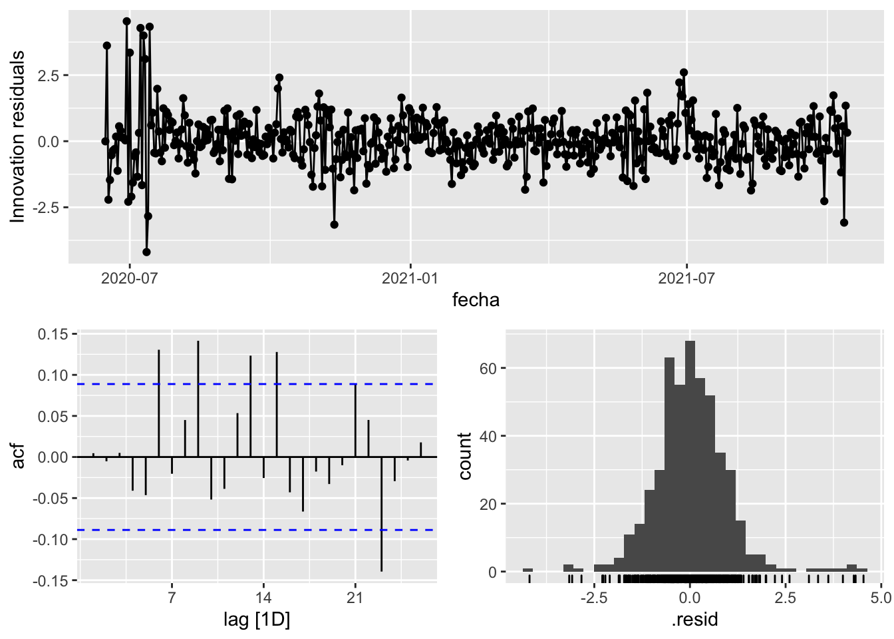

pacman::p_load(
here, # file locator
tidyverse, # data management and ggplot2 graphics
skimr, # get overview of data
janitor, # produce and adorn tabulations and cross-tabulations
tsibble,
fable,
feasts,
fabletools
)
covid_data <- readRDS(here("data", "clean", "final_covid_data.rds"))7 Univariate data
Load packages:
8 Asturias
data_asturias <- covid_data %>%
filter(provincia == "Asturias") %>%
select(provincia, fecha, num_casos, num_hosp, tmed,mob_grocery_pharmacy, mob_parks,
mob_residential, mob_retail_recreation, mob_transit_stations, mob_workplaces, mob_flujo) %>%
drop_na() %>%
as_tsibble(key = provincia, index = fecha)
data_asturias# A tsibble: 654 x 12 [1D]
# Key: provincia [1]
provincia fecha num_casos num_hosp tmed mob_grocery_pharmacy mob_parks
<chr> <date> <dbl> <dbl> <dbl> <dbl> <dbl>
1 Asturias 2020-03-16 105 11 8.6 -30 -70
2 Asturias 2020-03-17 80 20 8.8 -39 -71
3 Asturias 2020-03-18 91 24 11.8 -39 -67
4 Asturias 2020-03-19 101 29 10.9 -42 -70
5 Asturias 2020-03-20 83 29 11.5 -40 -75
6 Asturias 2020-03-21 68 33 11 -49 -84
7 Asturias 2020-03-22 76 30 12.6 -75 -87
8 Asturias 2020-03-23 70 36 11.8 -46 -73
9 Asturias 2020-03-24 58 36 12.4 -49 -72
10 Asturias 2020-03-25 57 43 11 -50 -69
# … with 644 more rows, and 5 more variables: mob_residential <dbl>,
# mob_retail_recreation <dbl>, mob_transit_stations <dbl>,
# mob_workplaces <dbl>, mob_flujo <dbl>data_asturias_train <- data_asturias %>%
filter(fecha <= as.Date("2021-09-30", format = "%Y-%m-%d"))
summary(data_asturias_train$fecha) Min. 1st Qu. Median Mean 3rd Qu. Max.
"2020-03-16" "2020-08-03" "2020-12-22" "2020-12-22" "2021-05-12" "2021-09-30" data_asturias_test <- data_asturias %>%
filter(fecha > as.Date("2021-09-30", format = "%Y-%m-%d"))
summary(data_asturias_test$fecha) Min. 1st Qu. Median Mean 3rd Qu. Max.
"2021-10-01" "2021-10-23" "2021-11-14" "2021-11-14" "2021-12-06" "2021-12-29" lambda_asturias <- data_asturias %>%
features(num_casos, features = guerrero) %>%
pull(lambda_guerrero)
fit_model <- data_asturias_train %>%
model(
arima_at1 = ARIMA(box_cox(num_casos, lambda_asturias)),
arima_at2 = ARIMA(box_cox(num_casos, lambda_asturias),
stepwise = FALSE, approx = FALSE),
Snaive = SNAIVE(box_cox(num_casos, lambda_asturias))
)
# Show and report model
fit_model# A mable: 1 x 4
# Key: provincia [1]
provincia arima_at1 arima_at2 Snaive
<chr> <model> <model> <model>
1 Asturias <ARIMA(0,1,1)(1,0,1)[7]> <ARIMA(4,1,2)> <SNAIVE>report(fit_model)Warning in report.mdl_df(fit_model): Model reporting is only supported for
individual models, so a glance will be shown. To see the report for a specific
model, use `select()` and `filter()` to identify a single model.# A tibble: 3 × 9
provincia .model sigma2 log_lik AIC AICc BIC ar_roots ma_roots
<chr> <chr> <dbl> <dbl> <dbl> <dbl> <dbl> <list> <list>
1 Asturias arima_at1 1.47 -906. 1820. 1820. 1838. <cpl [7]> <cpl [8]>
2 Asturias arima_at2 1.42 -895. 1804. 1804. 1834. <cpl [4]> <cpl [2]>
3 Asturias Snaive 3.58 NA NA NA NA <NULL> <NULL> fit_model %>%
pivot_longer(-provincia,
names_to = ".model",
values_to = "orders") %>%
left_join(glance(fit_model), by = c("provincia", ".model")) %>%
arrange(AICc) %>%
select(.model:BIC)# A mable: 3 x 7
# Key: .model [3]
.model orders sigma2 log_lik AIC AICc BIC
<chr> <model> <dbl> <dbl> <dbl> <dbl> <dbl>
1 arima_at2 <ARIMA(4,1,2)> 1.42 -895. 1804. 1804. 1834.
2 arima_at1 <ARIMA(0,1,1)(1,0,1)[7]> 1.47 -906. 1820. 1820. 1838.
3 Snaive <SNAIVE> 3.58 NA NA NA NA # We use a Ljung-Box test >> large p-value, confirms residuals are similar / considered to white noise
fit_model %>%
select(Snaive) %>%
gg_tsresiduals()Warning: Removed 7 row(s) containing missing values (geom_path).Warning: Removed 7 rows containing missing values (geom_point).Warning: Removed 7 rows containing non-finite values (stat_bin).
fit_model %>%
select(arima_at1) %>%
gg_tsresiduals()
fit_model %>%
select(arima_at2) %>%
gg_tsresiduals()
augment(fit_model) %>%
features(.innov, ljung_box, lag=7)# A tibble: 3 × 4
provincia .model lb_stat lb_pvalue
<chr> <chr> <dbl> <dbl>
1 Asturias arima_at1 19.8 0.00602
2 Asturias arima_at2 5.89 0.552
3 Asturias Snaive 692. 0 augment(fit_model) %>%
features(.innov, ljung_box, lag=14)# A tibble: 3 × 4
provincia .model lb_stat lb_pvalue
<chr> <chr> <dbl> <dbl>
1 Asturias arima_at1 49.1 0.00000872
2 Asturias arima_at2 33.3 0.00259
3 Asturias Snaive 954. 0 augment(fit_model) %>%
features(.innov, ljung_box, lag=21)# A tibble: 3 × 4
provincia .model lb_stat lb_pvalue
<chr> <chr> <dbl> <dbl>
1 Asturias arima_at1 57.2 0.0000339
2 Asturias arima_at2 42.3 0.00383
3 Asturias Snaive 992. 0 # Significant spikes out of 30 is still consistent with white noise
# To be sure, use a Ljung-Box test, which has a large p-value, confirming that
# the residuals are similar to white noise.
# Note that the alternative models also passed this test.
#
# Forecast
fc_h7 <- fabletools::forecast(fit_model, h = 7)
fc_h14 <- fabletools::forecast(fit_model, h = 14)
fc_h21 <- fabletools::forecast(fit_model, h = 21)
fc_h90 <- fabletools::forecast(fit_model, h = 90)# Plots
fc_h7 %>%
autoplot(data_asturias_test) +
labs(y = "Nº cases", title = "Asturias - forecast h7")
fc_h7 %>%
autoplot(data_asturias) +
labs(y = "Nº cases", title = "Barcelona - forecast h7")
# Accuracy
fabletools::accuracy(fc_h7, data_asturias)# A tibble: 3 × 11
.model provincia .type ME RMSE MAE MPE MAPE MASE RMSSE ACF1
<chr> <chr> <chr> <dbl> <dbl> <dbl> <dbl> <dbl> <dbl> <dbl> <dbl>
1 arima_at1 Asturias Test 5.32 8.64 7.03 16.9 51.3 0.160 0.113 0.465
2 arima_at2 Asturias Test 5.13 8.72 6.88 14.9 49.9 0.156 0.114 0.439
3 Snaive Asturias Test -0.556 9.09 8.05 -50.8 89.6 0.183 0.119 0.640# Plots
fc_h14 %>%
autoplot(data_asturias_test) +
labs(y = "Nº cases", title = "Asturias - forecast h14")
fc_h14 %>%
autoplot(data_asturias) +
labs(y = "Nº cases", title = "Barcelona - forecast h14")
# Accuracy
fabletools::accuracy(fc_h14, data_asturias)# A tibble: 3 × 11
.model provincia .type ME RMSE MAE MPE MAPE MASE RMSSE ACF1
<chr> <chr> <chr> <dbl> <dbl> <dbl> <dbl> <dbl> <dbl> <dbl> <dbl>
1 arima_at1 Asturias Test 5.49 8.51 7.28 11.6 59.9 0.165 0.112 0.0225
2 arima_at2 Asturias Test 4.65 8.06 6.56 4.24 56.2 0.149 0.106 0.0544
3 Snaive Asturias Test -1.83 9.24 7.52 -71.4 102. 0.171 0.121 0.104 # Plots
fc_h21 %>%
autoplot(data_asturias_test) +
labs(y = "Nº cases", title = "Asturias - forecast h21")
fc_h21 %>%
autoplot(data_asturias) +
labs(y = "Nº cases", title = "Barcelona - forecast h21")
# Accuracy
fabletools::accuracy(fc_h21, data_asturias)# A tibble: 3 × 11
.model provincia .type ME RMSE MAE MPE MAPE MASE RMSSE ACF1
<chr> <chr> <chr> <dbl> <dbl> <dbl> <dbl> <dbl> <dbl> <dbl> <dbl>
1 arima_at1 Asturias Test 7.15 10.3 8.35 22.2 54.4 0.190 0.134 0.264
2 arima_at2 Asturias Test 5.90 9.41 7.36 13.3 49.8 0.167 0.123 0.250
3 Snaive Asturias Test -1.40 10.1 8.52 -55.9 88.1 0.193 0.132 0.350# Plots
fc_h90 %>%
autoplot(data_asturias_test) +
labs(y = "Nº cases", title = "Asturias - forecast h90")
fc_h90 %>%
autoplot(data_asturias) +
labs(y = "Nº cases", title = "Barcelona - forecast h90")# Accuracy
fabletools::accuracy(fc_h90, data_asturias)# A tibble: 3 × 11
.model provincia .type ME RMSE MAE MPE MAPE MASE RMSSE ACF1
<chr> <chr> <chr> <dbl> <dbl> <dbl> <dbl> <dbl> <dbl> <dbl> <dbl>
1 arima_at1 Asturias Test 309. 591. 309. 65.1 72.7 7.03 7.74 0.896
2 arima_at2 Asturias Test 310. 594. 310. 61.6 70.4 7.04 7.77 0.897
3 Snaive Asturias Test 294. 582. 298. 30.7 71.0 6.76 7.62 0.893